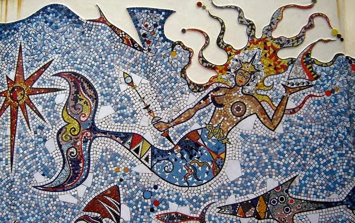
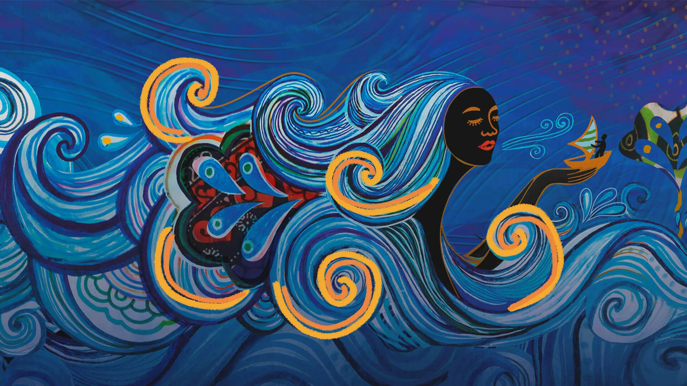

YABÁ DO MAR
Maternidade, Acolhedora e Cura das emoções profundas.
" Quando o fardo é grande demais, você descansa em meus braços. "
Quem é Iemanjá?

Iemanjá é uma divindade conhecida ,amada e agraciada nas religiões de matriz africana. Senhora das águas salgadas, mãe
espiritual, símbolo da maternidade e da proteção, Iemanjá representa a força feminina ancestral ligada à criação da vida, ao
acolhimento e às emoções humanas. Seu nome vem do iorubá Yèyé omo ejá, que significa “mãe cujos filhos são peixes”, mostrando
sua profunda ligação com a fertilidade, com a vida e com o cuidado materno. O colo e o amor de Iemanjá acolhe os corações mais
feridos,os corações com rejeição materna e familiar,almas que se sentem sozinhas e não agradam- se dá própria essência e dores
emocionais causadas por transtornos.
Dentro do Candomblé e da Umbanda, Iemanjá ocupa um lugar de extrema importância espiritual. Ela é vista como uma mãe que
acolhe, aconselha, protege e guia seus filhos, mas também como uma força da natureza extremamente poderosa. Assim como o mar
pode estar calmo e tranquilo em um momento e revolto em outro, Iemanjá também simboliza intensidade emocional, firmeza e limpeza
espiritual. Ela não representa apenas carinho e doçura, mas também correção, autoridade e proteção feroz daqueles que ama.
Iemanjá é amorosa e cuidadosa.
Muitas pessoas enxergam Iemanjá apenas de forma folclórica, associando sua imagem somente a sereias ou festas na praia, mas
sua importância dentro das religiões afro-brasileiras é muito mais profunda. Ela carrega simbolismos ligados à ancestralidade
negra, à memória espiritual do povo africano e à resistência cultural. Durante o período da escravidão, o oceano tornou-se
símbolo de dor, travessia e saudade para os povos africanos arrancados de suas terras, e por isso as águas passaram a carregar
grande significado espiritual dentro das tradições afro-brasileiras também sendo conhecido como calunga grande, popularmente
chamado de cemitério marinho pois ali,residem muitos corpos sejam de afogamentos,sejam de negros escravizados.
As características de Iemanjá podem variar conforme a nação e a tradição de cada terreiro. Algumas casas a vestem
predominantemente de branco e azul-claro, enquanto outras utilizam prata, cristalino ou tons perolados. Em algumas tradições
ela é mais ligada à maternidade serena, enquanto em outras aparece como uma rainha imponente e rígida. Isso acontece porque
as religiões de matriz africana preservam diferentes fundamentos ancestrais, e não funcionam de maneira totalmente padronizada,
porém, algo que não muda é que Iemanjá é uma rainha,uma senhora que causa impacto a quem a vê manifestada em seus médiuns em
um salão de candomblé, uma mãe que cuida,que sabe zelar e a energia de tal é essencial em um candomblé e terreiros de umbanda.
Elementos ligados a Iemanjá;
Os elementos ligados a Iemanjá estão profundamente conectados ao mar, às emoções, à maternidade e à energia feminina
ancestral e até uma certa melancolia. Sereias ou falangeira de Iemanjá na umbanda bem " chorando" para limparem de seus filhos
o que está escondido profundamente em suas almas,ela faz movimento de limpeza com suas águas levando todo peso emocional. O
oceano é seu principal domínio espiritual, simbolizando profundidade emocional, mistério, fertilidade, transformação e força
da natureza. Assim como o mar possui calmaria e tempestade, Iemanjá também representa equilíbrio entre acolhimento e firmeza.
Entre seus principais elementos estão as águas salgadas, conchas, pérolas, espelhos, perfumes, flores brancas, estrelas-do-mar
e objetos ligados à feminilidade e ao autocuidado. Muitas pessoas interpretam esses elementos apenas como símbolos de beleza, mas
dentro das religiões afro-brasileiras eles possuem significados espirituais profundos. O espelho, por exemplo, pode representar
autoconhecimento, identidade espiritual e reconhecimento da própria essência. As pérolas simbolizam sabedoria, profundidade
emocional e preciosidade espiritual. Já o mar representa o ventre da vida, o lugar de onde tudo nasce e para onde tudo retorna.
As comidas e oferendas dedicadas a Iemanjá também variam conforme a tradição religiosa e os fundamentos de cada casa. Entre
as mais conhecidas estão o manjar branco, arroz branco, canjica, flores e águas perfumadas. Porém, é importante compreender que
oferenda não é apenas um “presente” ou uma simpatia feita de qualquer forma. Dentro do Candomblé e de outras tradições
afro-brasileiras, tudo possui fundamento, preparo correto, rezas e significados espirituais específicos.
As cores ligadas a Iemanjá também podem variar de acordo com a nação. As mais conhecidas são branco, azul-claro, prata e
tons cristalinos. Em algumas tradições ela também pode aparecer ligada a tons mais perolados ou azul profundo, representando a
profundidade do oceano.
Qual o significado espiritual de ser filho de Iemanjá?

Dentro das religiões de matriz africana, acredita-se que ninguém pertence a um orixá por acaso. O orixá rege aspectos da
vida e da espiritualidade que aquela pessoa precisa desenvolver, fortalecer ou equilibrar durante sua caminhada. Por isso, ser
filho de Iemanjá não significa apenas “ter personalidade parecida” com ela, mas carregar lições espirituais ligadas às emoções,
à família, ao cuidado e ao equilíbrio interior.
Filhos de Iemanjá costumam ser vistos como pessoas acolhedoras, intuitivas, protetoras e profundamente emocionais. Muitas
vezes possuem grande capacidade de cuidar dos outros, ouvir dores alheias e oferecer proteção emocional para quem amam. Também
costumam ter forte ligação com espiritualidade, sonhos, intuição e sensibilidade energética.
Ao mesmo tempo, muitos filhos de Iemanjá enfrentam dificuldades relacionadas ao excesso de preocupação, sobrecarga emocional,
apego e necessidade constante de proteger todos ao redor. São pessoas que frequentemente carregam dores familiares, questões
emocionais profundas e responsabilidades afetivas muito cedo.
Assim como pessoas ligadas a Oxum podem trabalhar questões relacionadas à fertilidade, autoestima e afetividade, Iemanjá
também possui profunda ligação com maternidade, ventre, estrutura familiar e cura emocional. Em algumas tradições, pessoas que
enfrentam conflitos familiares, abandono materno, desequilíbrios emocionais ou necessidade de acolhimento espiritual buscam amparo
na energia de Iemanjá.
Porém, é importante lembrar que cada pessoa é única. Orixá não funciona como signo ou estereótipo. A relação espiritual
entre pessoa e orixá é muito mais profunda e complexa do que simples características de personalidade.
Itãs: Histórias Mitolôgicas de Iemanjá;

Existem diversos itãs sobre Iemanjá, e cada tradição pode preservar versões diferentes dessas histórias sagradas. Os itãs
são ensinamentos ancestrais transmitidos oralmente ao longo das gerações, carregando conhecimentos espirituais, culturais e
filosóficos importantes.
Uma das histórias mais conhecidas conta que Iemanjá era uma grande mãe ancestral, ligada à criação da vida e à origem de
diversos orixás. Em algumas versões, de seus seios nasceram rios e águas que alimentaram o mundo. Em outras, ela é considerada
mãe de muitos orixás importantes, simbolizando fertilidade, geração da vida e continuidade da ancestralidade.
Também existem itãs que mostram Iemanjá enfrentando sofrimento, violência e tristeza, transformando sua dor em correntezas e oceanos.
Essas histórias carregam simbolismos profundos sobre liberdade, resistência feminina, transformação espiritual e força emocional.
Assim como o mar nunca permanece igual, Iemanjá também simboliza movimento, renovação e capacidade de sobreviver às dores mais profundas.
Os itãs não devem ser vistos apenas como “lendas”. Dentro das religiões afro-brasileiras, eles são formas ancestrais de transmitir
sabedoria, ensinamentos morais, fundamentos religiosos e conhecimentos espirituais preservados há séculos.